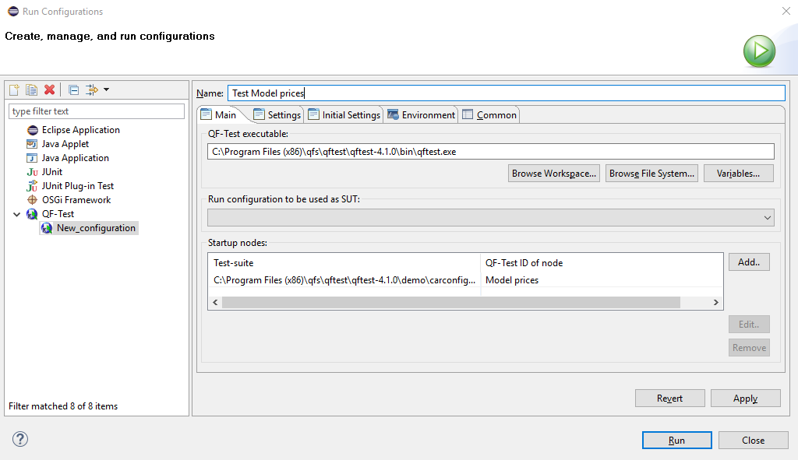
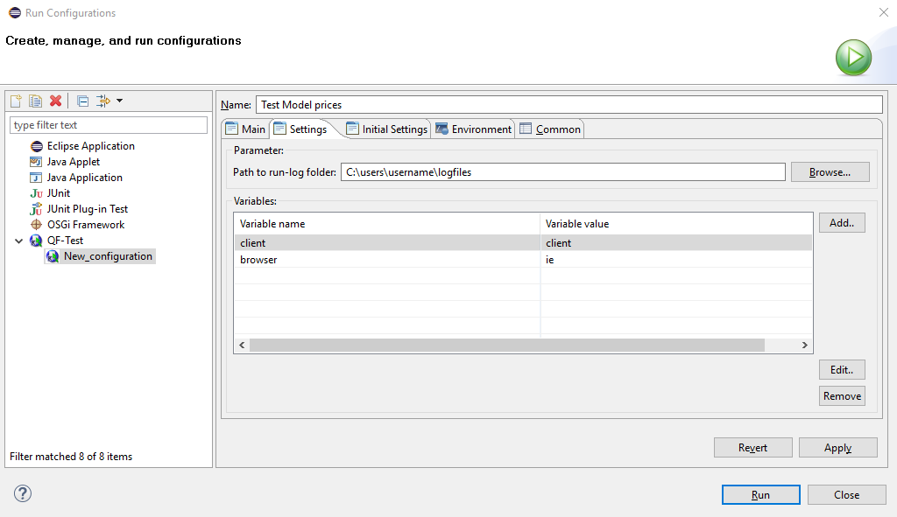
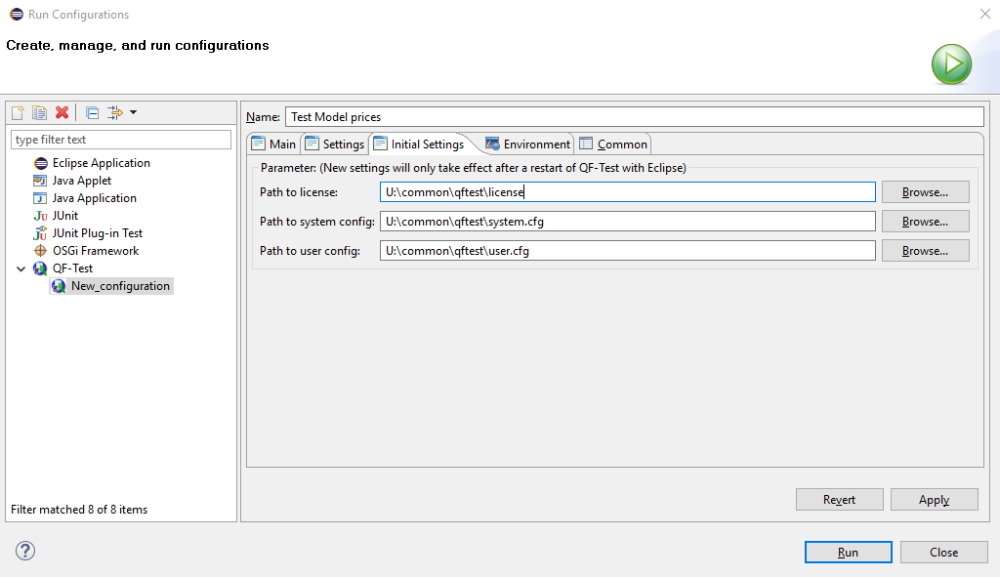

| Version 6.0.3 |
Eclipse (http://eclipse.org) is an Open Source software developer tool for java applications.
QF-Test offers an Eclipse plugin enabling you to start an application directly from Eclipse and run tests on it - anything from whole test sets, single test cases or even just a mouse click.
 Video instructions: 'The QF-Test Eclipse
Plugin'
Video instructions: 'The QF-Test Eclipse
Plugin'
For the installation please copy the Eclipse plugin file
de.qfs.qftest_6.0.3.jar from the subdirectory qftest-6.0.3/misc/
of the QF-Test installation directory to the subdirectory 'dropins' of the
Eclipse installation directory. Then (re-)start
Eclipse and the plugin will be available.
Open the Eclipse menu »Run«-»Run Configurations«. Enter the QF-Test nodes to be started in the tab 'Main' and if necessary enter parameters in the tabs 'Settings' and 'Initial Settings'. (The tabs 'Environment' and 'Common' are standard Eclipse tabs that are not needed for the configuration of the QF-Test Plugin.)
Then save the configuration by pressing 'Apply'. To start a test run press 'Run'.
|
|  | ||
|
| Figure 26.1: Eclipse plugin configuration - tab 'Main' | ||
Enter the fully qualified path to the QF-Test executable 'qftest.exe' in the field
QF-Test executable, e.g. C:\Program Files (x86)\qfs\qftest\qftest-4.1.0\bin\qftest.exe.
'Run configuration to be used as SUT' is an optional entry. You may enter an existing Eclipse 'Run Configuration' for starting the application to be tested. At the start of the application the QF-Test plugin sets up the connection to QF-Test so you can replay or record tests on the application. Use this option when you specify QF-Test nodes in the 'Startup nodes' section which do not start the application themselves. Please be aware that the run configuration to be used as SUT will be started and then right away the listed 'startup nodes' will be executed. So, to make sure the SUT is started when executing the 'startup nodes' the first action of the first 'startup nodes' should be to wait for the SUT. This can be done either by inserting a 'Wait for client to connect' node at the beginning of the first 'startup node' or by adding a first 'startup node' just calling a 'Wait for client to connect' node in QF-Test.
Enter all QF-Test nodes to be executed in the table 'Startup nodes'. You need to specify the 'QF-Test ID' of the node as well as its test-suite. Please be aware that the 'QF-Test ID' is a separate attribute of the node and not its name. The 'QF-Test ID' attribute is empty by default and has to be set before use.
|
|  | ||
|
| Figure 26.2: Eclipse plugin configuration - Tab 'Settings' | ||
Variables specified in this tab will be read each time before executing the run configuration.
'Path to run-log folder' specifies the directory where to save the run-logs of the test runs of the run configuration. It is optional. When empty the run-logs are saved as configured in QF-Test itself.
If required enter variables to be passed to QF-Test on command line level in the table 'Variables'. This will overwrite default values of the variable.
|
|  | ||
|
| Figure 26.3: Eclipse plugin configuration - Tab 'Initial Settings' | ||
The values set in this tab are optional and only read in once before the start of QF-Test When changing them you need to restart QF-Test before they take effect.
Path to license file: Path of the license file to be used.
Path to qftest system config file: Path of the qftest.cfg file to be used.
Path to qftest user config file: Path of the user configuration file to be used.
| Last update: 9/6/2022 Copyright © 1999-2022 Quality First Software GmbH |